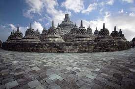
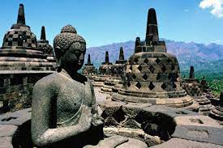
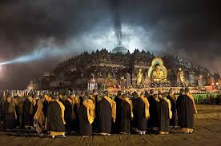
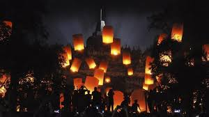
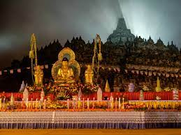

Discover
Sejarah Indonesia
Borobudur adalah sebuah candi Buddha yang terletak di Borobudur Magelang Jawa Tengah, Indonesia. Lokasi candi adalah kurang lebih 100 km di indonesia barat daya Semarang. 86km di sebelah barat Surakarta dan 40km di sebelah barat laut yogyakarta
PELAJARILive Event
Kegiatan Acara
Sendratari "Mahakarya Borobudur" digelar di Borobudur merupakan cerita tentang pembangunan Candi Borobudur dan dimainkan oleh para seniman lokal bekerja sama dengan seniman tari dari Institut Seni Indonesia (ISI) Surakarta.
LIHAT EVENT


